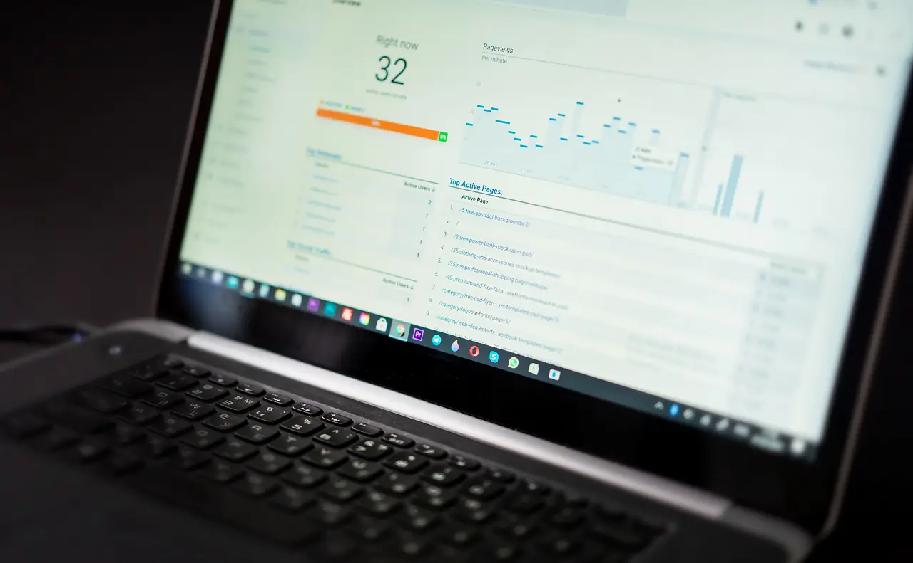
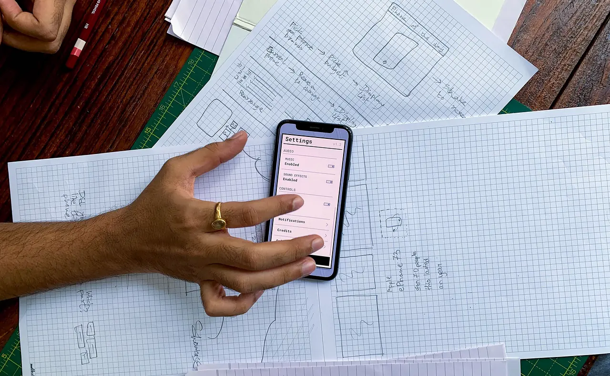

Landing page
Tự làm landing page bằng công cụ kéo thả hay thuê thiết kế? So sánh chi phí, tốc độ và đo lường
Công cụ kéo thả giúp ai cũng làm được một trang bán hàng trong một buổi tối. Câu hỏi thật là trang đó có tải nhanh, đo được chuyển đổi và đáng với thời gian bạn bỏ ra không.
Tự làm landing page bằng công cụ kéo thả là hợp lý khi bạn có thời gian, nội dung đã sẵn sàng, chỉ cần một trang đơn giản để thử một ưu đãi và có người biết gắn mã đo lường. Nên thuê thiết kế khi trang đó sẽ nhận nhiều tiền quảng cáo, cần nội dung bán hàng thuyết phục, cần tải nhanh trên điện thoại và đo chuyển đổi chính xác, vì lúc đó mỗi điểm phần trăm chuyển đổi đáng giá hơn khoản phí thiết kế.
Bài này so sánh công bằng hai cách: các công cụ kéo thả phổ biến ở Việt Nam làm tốt điều gì, những chi phí ẩn ít người tính, chuyện tốc độ và gắn Pixel, GA4, rồi đưa ra checklist để bạn tự quyết. Nếu bạn còn đang phân vân giữa landing page và website, hãy đọc trước bài landing page khác website thế nào.
Các công cụ kéo thả phổ biến ở Việt Nam
Có rất nhiều công cụ, nhưng người làm kinh doanh ở Việt Nam thường gặp ba nhóm sau. Mỗi nhóm có điểm mạnh riêng, không có công cụ nào tốt nhất cho mọi trường hợp.
LadiPage
LadiPage là nền tảng do Việt Nam phát triển, giao diện tiếng Việt, kho mẫu theo ngành phổ biến trong nước, có sẵn form, pop-up và kết nối với các công cụ bán hàng quen thuộc. Ưu điểm lớn là người không biết lập trình vẫn dựng được trang trong một buổi và nhận hỗ trợ bằng tiếng Việt. Nhược điểm là trang phụ thuộc vào nền tảng: ngừng gia hạn thì trang ngừng chạy, và khó mang thiết kế sang nơi khác.
WordPress kết hợp Elementor
Elementor là plugin kéo thả chạy trên WordPress. Phù hợp khi bạn đã có website WordPress và muốn landing page nằm chung tên miền, chung hệ quản trị. Linh hoạt, nhiều tiện ích mở rộng, nhưng bạn phải tự lo hosting, cập nhật plugin, bảo mật và tối ưu tốc độ. Trang nặng nhiều hiệu ứng rất dễ chậm trên điện thoại nếu không tối ưu.
Wix và các trình dựng web trọn gói
Wix và các nền tảng tương tự cung cấp cả hosting, tên miền, mẫu giao diện trong một tài khoản. Dễ dùng, nhiều mẫu đẹp, phù hợp khi bạn muốn làm cả website lẫn landing page trên cùng một nền tảng. Mẫu chủ yếu theo phong cách quốc tế, cần chỉnh nhiều để hợp với khách Việt và hành vi mua qua Zalo, Messenger.
Về giá công cụ: các nền tảng trên thu phí thuê bao theo tháng hoặc năm, gói càng cao càng nhiều trang, nhiều lượt truy cập và tính năng như A/B test, gắn tên miền riêng, bỏ logo nền tảng. Bảng giá thay đổi theo thời gian và theo khuyến mãi, nên tại thời điểm viết (11/2026) Dream Labs khuyên bạn xem trực tiếp trang giá chính thức của từng nền tảng ở các liên kết trên, tính theo giá trả cả năm và cộng thêm các khoản dưới đây trước khi so với phí thuê thiết kế.
| Tiêu chí | LadiPage | WordPress + Elementor | Wix và tương tự |
|---|---|---|---|
| Ngôn ngữ, hỗ trợ | Tiếng Việt | Tiếng Anh, cộng đồng Việt lớn | Có giao diện tiếng Việt một phần |
| Mẫu có sẵn | Nhiều mẫu theo ngành ở Việt Nam | Nhiều, phần lớn phong cách quốc tế | Nhiều, phong cách quốc tế |
| Hosting | Nền tảng lo | Tự thuê và tự quản lý | Nền tảng lo |
| Quyền sở hữu trang | Phụ thuộc thuê bao | Bạn giữ toàn bộ mã nguồn | Phụ thuộc thuê bao |
| Tốc độ trên điện thoại | Tùy cách dựng, cần nén ảnh | Tùy hosting và plugin, dễ nặng | Tùy mẫu, khó can thiệp sâu |
| Phù hợp nhất | Người bán hàng tự chạy quảng cáo | Đã có website WordPress | Muốn làm cả website trên một nền tảng |
Chi phí ẩn khi tự làm
So sánh "thuê bao vài trăm nghìn một tháng" với "phí thiết kế vài triệu" là chưa đủ. Khi tự làm, những khoản sau thường bị bỏ quên:
- Thời gian của bạn. Lần đầu dựng một trang tử tế thường mất nhiều buổi: chọn mẫu, viết chữ, tìm ảnh, chỉnh trên điện thoại, gắn mã, thử form. Nếu bạn là chủ doanh nghiệp, đó là thời gian không dành cho bán hàng.
- Nội dung bán hàng. Công cụ cho bạn khung, không viết hộ bạn tiêu đề, lợi ích, câu trả lời cho băn khoăn của khách. Nội dung yếu là lý do phổ biến khiến trang đẹp mà không ra khách.
- Hình ảnh. Ảnh sản phẩm thật, chụp đủ sáng, đúng tỷ lệ. Ảnh tải từ mạng có thể vướng bản quyền; ảnh kho miễn phí thì nhiều trang khác cũng dùng.
- Tên miền và gói đủ tính năng. Gói miễn phí hoặc gói thấp thường không cho gắn tên miền riêng, giới hạn số trang hoặc lượt truy cập, hoặc thiếu tính năng bạn cần đúng lúc chạy quảng cáo.
- Tiền quảng cáo chạy vào trang chưa tối ưu. Đây là khoản lớn nhất. Trang tải chậm, form lỗi, Pixel không ghi nhận chuyển đổi khiến ngân sách quảng cáo hao hụt mà bạn không biết vì sao.
- Phụ thuộc thuê bao. Ngừng gia hạn, trang ngừng chạy. Khi muốn chuyển nền tảng, phần lớn phải dựng lại từ đầu.
Tốc độ: điều công cụ kéo thả không tự lo hết
Phần lớn khách bấm từ quảng cáo trên điện thoại, mở trang trong trình duyệt bên trong ứng dụng Facebook, TikTok hoặc Zalo, nhiều khi bằng mạng di động. Trang chậm vài giây là một phần khách đã quay lại bảng tin trước khi thấy nội dung.
Công cụ kéo thả giúp dựng nhanh, nhưng tốc độ phụ thuộc nhiều vào cách bạn dùng nó:
- Ảnh chụp điện thoại vài MB đưa thẳng lên trang mà không nén.
- Video nền tự phát ở màn hình đầu.
- Nhiều hiệu ứng chuyển động, nhiều phông chữ, nhiều tiện ích chat, đếm ngược, pop-up cùng lúc.
- Gắn nhiều đoạn mã theo dõi trùng nhau sau nhiều lần thử.
Cách tự kiểm tra: mở trang bằng chính điện thoại của bạn qua mạng di động, bấm từ một bài đăng Facebook để mở trong trình duyệt ứng dụng, và chạy thử công cụ PageSpeed Insights của Google ở chế độ di động. Nếu màn hình đầu hiện chậm, hãy bắt đầu bằng việc nén ảnh và bỏ bớt hiệu ứng.

Gắn Pixel, GA4: phần hay bị làm sai nhất
Hầu hết công cụ kéo thả đều có ô dán mã Facebook Pixel, Google Analytics 4 hoặc mã TikTok. Dán mã thì dễ, nhưng đo đúng thì cần thêm vài bước:
- Ghi nhận đúng sự kiện chuyển đổi. Không chỉ lượt xem trang, mà là sự kiện khách gửi form thành công, bấm gọi, bấm Zalo. Sự kiện phải chạy khi form gửi thành công, không phải khi khách vừa bấm nút.
- Không đếm trùng. Gắn Pixel ở cả phần cài đặt chung và trong đoạn mã riêng sẽ khiến mỗi khách bị tính hai lần, số liệu đẹp nhưng sai.
- Gắn tham số UTM cho từng quảng cáo để trong GA4 tách được khách từ Facebook, TikTok, Zalo, Google.
- Kiểm tra bằng công cụ của nền tảng, như Trình quản lý sự kiện của Meta và chế độ DebugView của GA4, trước khi bật quảng cáo.
- Lưu khách về một nơi có thể xử lý ngay, như Google Sheets hoặc báo qua Zalo cho người tư vấn, kèm nguồn chiến dịch.
Chi tiết về Pixel, sự kiện và UTM cho từng nền tảng quảng cáo có trong bài landing page chạy quảng cáo Facebook, TikTok.
Khi nào tự làm là hợp lý
Tự làm hoàn toàn là lựa chọn tốt trong nhiều trường hợp. Bạn nên tự làm nếu phần lớn các ý dưới đây đúng:
- Bạn cần thử nhanh một ý tưởng, một ưu đãi nhỏ với ngân sách quảng cáo thấp.
- Nội dung, ảnh sản phẩm, ưu đãi đã sẵn sàng, bạn biết rõ khách hỏi gì.
- Trong đội có người quen công cụ và biết kiểm tra Pixel, GA4.
- Bạn cần sửa trang thường xuyên, như đổi giá, đổi ưu đãi mỗi tuần.
- Trang chỉ chạy ngắn ngày, như một sự kiện hoặc một đợt xả hàng.
Khi nào nên thuê thiết kế
- Trang sẽ nhận phần lớn ngân sách quảng cáo của tháng, mỗi thay đổi nhỏ về chuyển đổi đều có ý nghĩa.
- Sản phẩm giá trị cao, khách cần được thuyết phục bằng nội dung và hình ảnh chỉn chu.
- Bạn chưa có nội dung bán hàng, hoặc đã tự làm mà trang có lượt xem nhưng ít khách để lại số.
- Thương hiệu cần trang riêng, không muốn giống mẫu có sẵn mà đối thủ cũng dùng.
- Bạn cần báo khách mới về Zalo ngay để gọi lại, cần A/B test hoặc báo cáo chuyển đổi định kỳ.
Cách kết hợp: thuê dựng một lần, tự sửa về sau
Một cách cân bằng là thuê làm trang chuẩn cho chiến dịch chính, bàn giao quyền quản trị, rồi đội của bạn tự đổi chữ, đổi giá, đổi ảnh cho các đợt sau. Khi thuê, hãy hỏi rõ trang được dựng trên nền tảng nào, tài khoản đứng tên ai và bạn có tự sửa được không.

Ví dụ minh họa
Hai tình huống giả định dưới đây giúp hình dung cách chọn, không phải khách hàng thật.
Tiệm bánh nhà làm bán quà Trung thu. Chủ tiệm có ảnh đẹp, biết rõ khách hỏi gì, chỉ chạy quảng cáo nhỏ trong ba tuần. Tự dựng bằng một mẫu có sẵn, form đặt bánh về Google Sheets, nhờ người quen kiểm tra Pixel. Đây là trường hợp tự làm rất hợp lý.
Phòng khám nha khoa chạy quảng cáo niềng răng quanh năm. Dịch vụ giá trị cao, khách cân nhắc lâu, ngân sách quảng cáo mỗi tháng lớn hơn nhiều so với phí thiết kế. Trang cần nội dung giải đáp kỹ, hình ảnh chuyên nghiệp, báo khách mới cho tư vấn viên ngay và thử hai phiên bản tiêu đề. Thuê thiết kế, sau đó đội marketing tự cập nhật ưu đãi hằng tháng là cách hợp lý hơn. Xem trang landing page cho nha khoa.
Sai lầm thường gặp khi tự làm
- Chọn mẫu đẹp trước, nghĩ nội dung sau. Nội dung bị nhồi vào khung có sẵn, thông điệp chính lọt xuống dưới.
- Chỉ xem trên máy tính. Phần lớn khách xem trên điện thoại, chữ quá nhỏ hoặc nút bị che là mất khách.
- Form quá dài. Hỏi tên, số điện thoại, email, địa chỉ, nhu cầu chi tiết ngay từ đầu. Với đa số chiến dịch, tên và số điện thoại là đủ.
- Không thử gửi form trước khi chạy. Form lỗi, dữ liệu không về Sheets, khách đã để lại số mà không ai biết.
- Dùng chung một trang cho mọi quảng cáo. Thông điệp quảng cáo và trang đích lệch nhau làm khách bối rối.
- Tài khoản đứng tên người làm hộ. Người đó nghỉ, bạn mất quyền truy cập trang và dữ liệu khách.
So sánh chi phí và giá thuê tại Dream Labs
Bảng dưới so sánh hai cách theo những gì bạn thực sự bỏ ra, không chỉ theo tiền.
| Khoản | Tự làm bằng công cụ kéo thả | Thuê thiết kế |
|---|---|---|
| Tiền trả ngay | Phí thuê bao công cụ | Phí thiết kế một lần, có thể kèm phí công cụ nếu dựng trên nền tảng thuê bao |
| Thời gian của bạn | Nhiều buổi cho lần đầu | Vài buổi trao đổi, duyệt bản |
| Nội dung bán hàng | Tự viết | Tùy gói, có gói viết sẵn |
| Gắn Pixel, GA4, kiểm tra | Tự làm và tự kiểm tra | Bên thiết kế làm và kiểm tra |
| Rủi ro | Trang chậm, đo sai, khó phát hiện | Chọn sai đơn vị, phạm vi không rõ |
| Phù hợp | Chiến dịch nhỏ, ngắn, cần sửa liên tục | Chiến dịch chính, ngân sách quảng cáo lớn |
Dream Labs có ba gói thiết kế landing page. Gói Cơ bản 3.000.000đ hợp với người đã có nội dung, cần trang 6–8 khối có form về Google Sheets và gắn sẵn Pixel, GA4. Gói Chuyên nghiệp 6.000.000đ thiết kế riêng, viết nội dung bán hàng và báo khách mới qua Zalo hoặc email. Gói Cao cấp 12.000.000đ có hai phiên bản A/B, báo cáo chuyển đổi hằng tuần và tối ưu lại sau 30 ngày.
| Gói | Giá | Thời gian | Bao gồm |
|---|---|---|---|
| Cơ bản | 3.000.000đ | 3–5 ngày4 vòng sửa | Có ngay trang đích để chạy quảng cáo và biết mỗi khách tiềm năng đến từ đâu.
|
| Chuyên nghiệpPhổ biến nhất | 6.000.000đ | 5–7 ngày9 vòng sửa | Nội dung bán hàng viết sẵn, khách để lại số được báo về Zalo để gọi lại khi còn nóng: tận dụng tốt hơn từng đồng quảng cáo.
|
| Cao cấp | 12.000.000đ | 7–10 ngày18 vòng sửa | Quyết định bằng số liệu thật: thử hai phiên bản, theo dõi hằng tuần, tối ưu lại sau 30 ngày.
|
Xem thêm trang thiết kế landing page, mẫu landing page và bảng giá chung. Nếu bạn đã tự làm một trang và muốn biết vì sao ít khách để lại số, hãy gửi link qua Zalo 0934 246 420 để Dream Labs xem và góp ý.
Câu hỏi thường gặp
Người không biết thiết kế có tự làm landing page được không?
Được. Công cụ kéo thả có mẫu sẵn, bạn thay chữ và ảnh là có trang. Phần khó không nằm ở thao tác mà ở nội dung thuyết phục, tốc độ trên điện thoại và đo chuyển đổi đúng, nên hãy dành thời gian cho ba việc này.
Dùng gói miễn phí của công cụ kéo thả để chạy quảng cáo có được không?
Có thể dùng để thử, nhưng gói miễn phí thường giới hạn tên miền riêng, số trang hoặc lượt truy cập và có thể hiện thương hiệu của nền tảng. Khi chạy quảng cáo nghiêm túc, nên dùng gói cho phép gắn tên miền riêng để khách tin hơn.
Thuê thiết kế rồi có tự sửa được không?
Tùy cách bàn giao. Hãy thỏa thuận từ đầu: trang dựng trên nền tảng nào, tài khoản đứng tên ai, bạn được sửa những phần nào. Dream Labs bàn giao để bạn tự đổi chữ, ảnh, ưu đãi cho các đợt sau.
Landing page tự làm có chậm hơn trang thuê làm không?
Không nhất thiết. Tốc độ phụ thuộc vào ảnh, hiệu ứng, số đoạn mã gắn thêm và hạ tầng. Trang tự làm gọn gàng, ảnh đã nén vẫn có thể nhanh; trang thuê làm nhiều hiệu ứng mà không tối ưu vẫn có thể chậm.
Làm sao biết landing page đang gắn Pixel đúng?
Dùng Trình quản lý sự kiện của Meta hoặc tiện ích kiểm tra Pixel trên trình duyệt, gửi thử form và xem sự kiện có ghi nhận đúng một lần không. Với GA4, bật chế độ DebugView để xem sự kiện theo thời gian thực.
Bao lâu thì nên làm lại landing page?
Khi đổi sản phẩm, đổi ưu đãi chính hoặc khi số liệu cho thấy nhiều người xem nhưng ít người để lại thông tin. Thường sau vài tuần chạy quảng cáo là đủ dữ liệu để quyết định sửa phần nào.
Nguồn ảnh: ảnh bìa: Luna Lovegood / Pexels · ảnh 1: Atlantic Ambience / Pexels · ảnh 2: Akshar Dave / Pexels. Ảnh dùng theo giấy phép miễn phí của Pexels, chỉ mang tính minh họa.
Bắt đầu cùng Dream Labs
Muốn có landing page chạy quảng cáo được ngay?
Gửi Dream Labs sản phẩm và ưu đãi bạn sắp chạy. Chúng tôi báo phạm vi, thời gian và gói phù hợp, kể cả khi bạn chỉ cần dựng mẫu để tự sửa về sau.